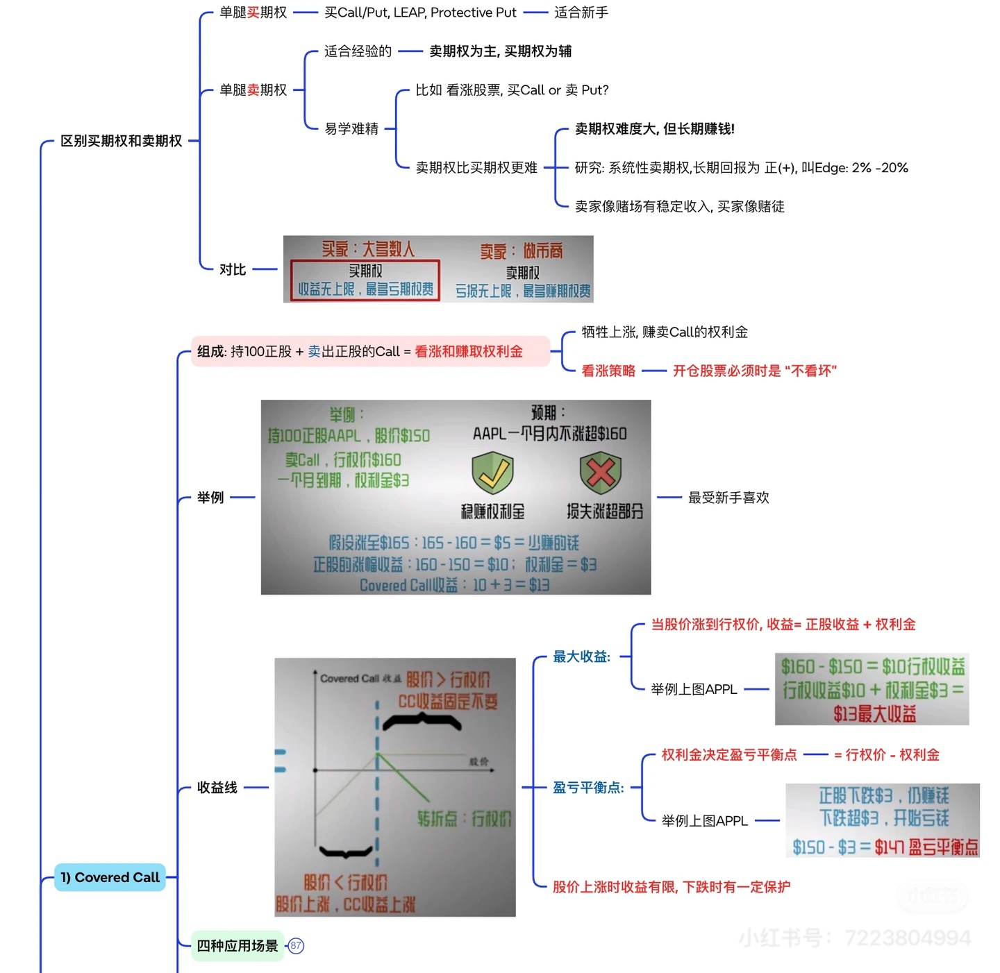
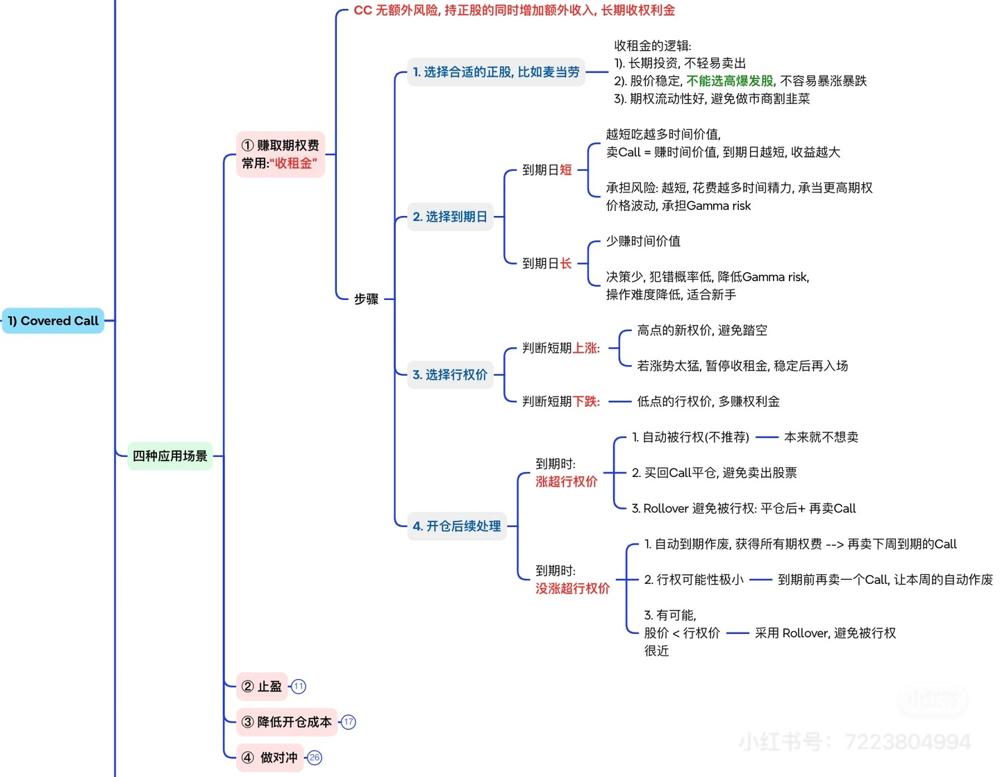
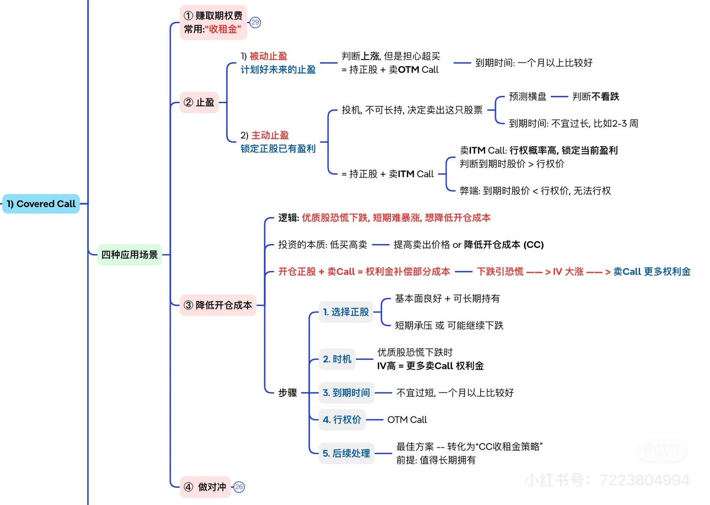
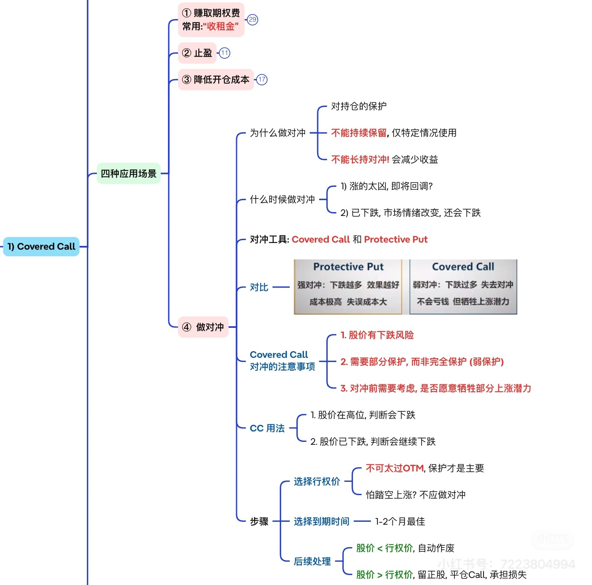

Step 1
先抓住这章想解决的问题
先读摘要和小目录，确认这章是在讲概念、定价、风险还是执行，不要一上来就陷进公式或策略名称。
实战应用篇 · Batch 7
把 Covered Call 拆成收租、止盈、降成本与弱对冲四种任务，讲清行权价和 Delta 选择。
先把这一章到底在解决什么问题讲清楚，再带着问题回到正文，效率会高很多
把 Covered Call 拆成收租、止盈、降成本与弱对冲四种任务，讲清行权价和 Delta 选择。
期权章节最容易失焦的地方，是一上来就陷进术语、腿结构和策略名字。更好的读法是先确定这章主要在讲概念、风险还是执行，再带着这个问题去读正文和 payoff 图。
期权最容易卡在名词和策略名上，所以这套教材默认按“先轮廓、再风险、后执行”来读
先读摘要和小目录，确认这章是在讲概念、定价、风险还是执行，不要一上来就陷进公式或策略名称。
先看最大收益、最大亏损、平衡点和亏损最容易扩大的区域，再回头理解每一条腿到底在做什么。
策略理解完成后，才去判断它更适合什么市场环境、什么波动结构，以及什么时候宁可不做。
正文按完整阅读链组织，建议先抓主结论，再回到分节例子逐段吃透。
本章主要基于以下图片材料整理并扩写：

Covered Call 的基本结构、收益线、最大收益与盈亏平衡点； 
Covered Call 作为“收租”策略时，标的、到期日、行权价与到期处理； 
Covered Call 的四种应用场景里，重点展开止盈与降低开仓成本； 
Covered Call 作为弱对冲工具，与 Protective Put 的保护强弱对比； 从 Delta 理解 Covered Call 的本质——选行权价，本质上就是选 Delta。 如果你只记一句话，那就是：
Covered Call 不是“持股顺手收点租”这么简单，它本质上是在拿一部分上涨空间，去换现金流、退出纪律、成本补贴或一层有限保护。
很多人第一次学 Covered Call，会觉得它很温和：
- 我本来就有股票；
- 现在只是顺手卖一张 Call；
- 收点权利金，看起来没什么复杂的。
真正的问题恰恰在这里。
因为 Covered Call 容易上手，但也最容易被误用。
如果你没想清楚：
- 自己为什么卖这张 Call；
- 愿不愿意卖掉股票；
- 想要的是收入、止盈、降成本，还是对冲；
- 以及该选多远的行权价和多长的到期时间；
那它看似简单，结果却很容易变成：
- 该涨的时候把利润封死；
- 该保护的时候又保护不够；
- 甚至连自己是想留股票还是想卖股票，都搞不清楚。
所以这一章不只是讲 Covered Call 的结构，而是要把它真正拆成四种不同任务来看：
收租、止盈、降低开仓成本、弱对冲。
这一章第一次读，最容易犯的错就是把 Covered Call 统一理解成“顺手收租”。
你第一遍先别急着看行权价远近，先问自己：
任务先分清，后面的行权价和期限选择才有意义。
第二遍再去补：
Covered Call 的标准结构是：
所以它和裸卖 Call 最大的区别在于：
这也是为什么它叫 Covered Call：
但别因为它听起来更安全，就把它理解成无脑增益。
它真正的交易含义是：
你继续持有股票，但你愿意在某个价位之上，把一部分上涨空间让出去，换回一笔立刻入账的权利金。
这就是它所有应用场景的根。
第25章 · AAPL 示例：持股成本 150，卖出 160 Call，收权利金 3
读 payoff 图时，不要只盯住最大收益。更有用的顺序是：先确认盈亏平衡点在哪里，再看价格穿越之后哪一侧会明显失控，最后再判断这种风险形状适不适合当前市场环境。
图片里给了一个很适合教材使用的例子：
那么这笔 Covered Call 的关键数字就非常清楚：
如果到期时股价涨到行权价以上，你的总收益大致是：
也就是说：
最大收益 =（行权价 - 持股成本）+ 权利金
由于你先收了 3 美元权利金，等于把持股成本从 150 降到 147。
所以这笔仓位的盈亏平衡点是：
盈亏平衡点 = 持股成本 - 权利金 = 150 - 3 = 147
这就是 Covered Call 看起来“比纯持股稍微抗跌一点”的来源。
但注意，只是稍微。
很多新手会误以为：
不是。
如果股票一路跌到接近 0，你最大的损失仍然接近：
持股成本 - 收到的权利金
所以 Covered Call 不是无风险收入机。
它只是：
这个结构决定了，它只能叫：
图片里有一句话很关键：
开仓股票必须时“ 不看坏 ”。
它的人话翻译就是：
因为 Covered Call 的前提，不是“我想赚点期权费”，而是：
如果你本来就不看好这只股票、或者根本不想继续拿它，那 Covered Call 往往不是首选。
因为：
结合图片里的经验总结，Covered Call 更适合这些股票：
比如成熟蓝筹、大盘科技、稳健 ETF，或者你本来就计划继续拿一段时间的优质公司。
如果一只股票很容易一周暴拉 15%–20%，那卖 Call 往往特别容易把自己卖得后悔。
流动性差的股票：
所以 Covered Call 看似简单，真正第一步不是挑行权价，而是：
先挑对你愿意长期相处的股票。
这是 Covered Call 最常见的用途。
它的底层逻辑很直接：
如果股价最终没有超过行权价：
这就是很多人口中的“收租”。
但这件事真正成立的前提，是：
所以 Covered Call 的“收租”并不是稳赚，而是：
在你愿意持股的前提下，把一段短期上涨空间卖掉，换现金流。
图片里把“止盈”拆得非常好，这里必须保留。
这种情况通常是：
这本质上是在说：
它适合：
图片里的第二种止盈更偏主动：
这种做法的意义是：
但它也有一个必须讲清的边界：
如果你真的非常明确要退出，Covered Call 只是帮助你优化退出，不是替代退出本身。
这是图片里最容易被低估、但很有实战感的一种用途。
它的逻辑大致是：
这其实是在做一件很朴素的事：
低买高卖。
只是这里的“高卖”，不是立刻卖掉股票，而是：
这类操作特别适合：
因为在这种环境里，Call 的价格往往更好卖。
但前提依然是：
图片里把这一点说得很透：
为什么？
因为 Covered Call 的保护来源，不是下跌时有一张 Put 站出来替你补血， 而只是：
这和 Protective Put 完全不是一个量级。
所以 Covered Call 更适合这些对冲情景：
它不适合：
图片里提到一个很真实的 trade-off：
所以短到期更像是：
适合：
图片也给了另一边：
所以很多教材里会把 Covered Call 的到期时间，理解成一个“管理频率选择器”：
但两边都别极端。
太短：
太长：
所以实践里，更重要的不是固定某个天数，而是：
你的目标是收租、止盈、降成本还是对冲，不同任务对应的到期时间偏好不一样。
这一点是本章最关键的进阶部分。
图片里的核心句子非常好：
选择行权价 = 选择 Delta。
为什么？
因为 Covered Call 的组合 Delta，大致可以理解成：
这意味着：
这就是为什么，挑行权价不是只看价格位置，而是在挑：
根据图片里的 Delta 读法，可以把三类 Covered Call 这样理解。
适合：
适合：
适合：
所以别再把行权价只看成“远一点或近一点”。
它真正表达的是：
你的仓位还想保留多强的 bullish exposure。
图片里还有一个很值得保留下来的动态提醒。
假设你一开始卖的是 ATM Call：
这就是很多人做 Covered Call 时会体会到的：
反过来，如果股价下跌：
这就解释了一个很多人事后才发现的现实：
所以 Covered Call 的保护不是线性的，而是：
涨时越涨越像减仓，跌时越跌越像重新变回持股。
这句话一懂，你对它的预期就会成熟很多。
这是 Covered Call 管理里最核心的问题。
如果股价涨过行权价，常见做法有三种：
如果你本来就把这张 Covered Call 当作：
那被行权未必是坏事。
很多人做 Covered Call 最大的问题，不是被行权，而是：
如果是这样，问题不在策略，而在开仓目的没想清楚。
如果你后来发现：
那就可以买回 Call。
代价通常是：
所以买回不是错，但它提醒你：
Covered Call 一旦开出去，你就已经真的把一部分上涨权卖掉了。
不是想拿回来时，一定还能很舒服地拿回来。
这就是最常见的 roll。
它适合：
roll 的本质不是“魔法修复”，而是重新定价你的取舍：
所以真正该不该 roll，不取决于“网上都这么做”，而取决于：
如果到期时股价仍低于行权价，最常见的情况是：
接下来你有几种常见选择：
这时要记住，Covered Call 的“连续收租”不是义务动作。
只要以下任意一点不再成立，就没必要机械续卖：
图片里给了很好的对比，值得直接吸收。
所以如果你的真实需求是：
那 Protective Put 通常更对题。
如果你的真实需求是：
那 Covered Call 才更合适。
这两者没有谁绝对更好，只有谁更匹配你的任务。
不是。
下跌风险的大头仍然来自正股。
你只是：
也不对。
如果你：
那 Covered Call 很可能只会让你后悔。
通常不是。
权利金多，往往意味着：
所以不能只看“收了多少钱”，还要看你为这笔钱卖掉了什么。
不行。
Covered Call 只能算弱保护， 而且持续长期做对冲，会不断牺牲上涨收益。
如果你的核心需求是真正的下方保险，它不是最合适的那把锤子。
这也不对。
如果你开仓前就知道：
那被行权完全可能是策略按预期完成。
真正的问题通常是：
这恰恰会让你永远理解不深。
行权价本质上是在决定：
所以一旦开始用 Covered Call，最好尽快形成这个反射：
我不是在选一个数字，我是在选一套 Delta 性格。
1. Covered Call = 持有正股 + 卖出 Call，本质上是在卖掉一部分上涨空间。 2. 它的最大收益是封顶的，下跌也只有有限缓冲。 3. 它最适合用在你本来就愿意持有、而且不短期看坏的股票上。 4. 收租、止盈、降低开仓成本、弱对冲，是四种不同任务，别混着做。 5. 到期时间决定管理频率和 Gamma 压力，不能只看权利金大小。 6. 选择行权价，本质上是在选 Delta，也是在选自己还要保留多少看涨暴露。 7. 该不该被行权、该不该 roll，答案不在市场上，而在你开仓时到底想完成什么任务。
Covered Call 之所以常被误用，不是因为它太复杂， 而是因为它太像一个“顺手就能做”的动作。
真正成熟的使用方式，是先把目的讲清楚，再开仓。
否则你收的不是租，常常只是未来后悔的预付款。
1. 为什么 Covered Call 的最大风险不能简单理解成“几乎没有风险”？ 2. 同样是卖 Call，收租、止盈和对冲这三种场景的核心任务分别有什么不同？ 3. 为什么说 OTM、ATM、ITM Covered Call 的区别，本质上是 Delta 性格的区别？ 4. 如果股价上涨导致卖出 Call 的绝对 Delta 变大，为什么你的组合看涨程度会下降？ 5. 什么时候你应该接受被行权，什么时候更适合买回或 roll？ 6. 如果你真正担心的是大跌，为什么 Protective Put 往往比 Covered Call 更对题？
Covered Call 真正高明的地方，不是多收了一笔权利金，而是你能不能在开仓前就说清：我到底是在卖上涨、卖时间，还是在卖掉自己未来的后悔空间。
Covered Call 讲的是“我已经有股票，怎么经营持仓”。
下一章 Sell Put 讲的则更像：
这也是为什么它和 Covered Call 骨架很像，任务却常常不同。